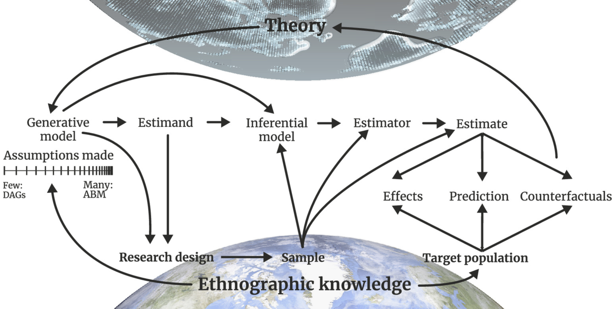
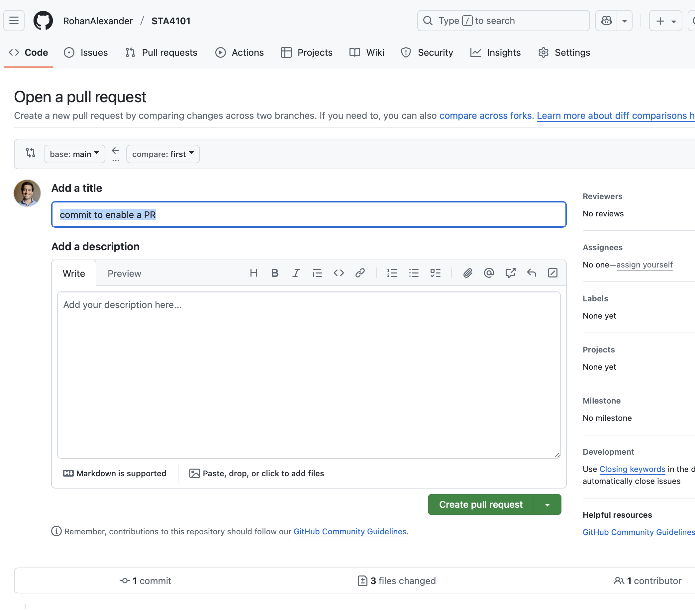

Workflow and version control
Rohan Alexander
8 September, 2025
Preliminary
Preliminary
- Introductions:
- Name?
- Degree?
- What you want to get out of this course?
- What you want to do next year?
- Initial course plans: https://rohanalexander.com/courses/statistical_data_science.html
- GitHub: https://github.com/RohanAlexander/STA4101
- Questions?
Workflow
What is statistical workflow?
- Definition: The steps that we go through when trying to use data to learn about the world.
- Aim: Want a process that is robust and rigorous end-to-end, not just in the statistical analysis part. This will enable transparent, efficient, and trustworthy research.
Why is it important that we think seriously about workflows?
- Our conclusions will only be as strong as the weakest part of our workflow.
Example: Cultural evolution
Deffner et al. (2024) outline a computational workflow for bridging theory and data in cultural evolution research.
Figure 1 from Deffner et al. (2024) illustrating a computational workflow for cultural evolution.
Stages (Alexander 2023)
- Plan and sketch an endpoint.
- Simulate and consider that simulated data.
- Acquire and prepare the actual data.
- Explore and understand the actual data.
- Share what was done and what was found.
Discussion: What is missing here?
Stages (Harrell 2025)
- Report formatting
- Data import
- Data overview
- Data processing
- Descriptive statistics (univariate or simple stratification)
- Analysis (stay close to data)
- Caching (parallel computing, simulation)
Discussion: What is missing here?
Version control
What is the problem?
- Rather than “first_go.py”, “first_go-fixed.py”, “first_go-fixed-with-mons-edits.py”. But this soon becomes cumbersome.
- One often soon turns to dates, for instance: “2022-01-01-analysis.py”, “2022-01-02-analysis.py”, “2022-01-03-analysis.py”, etc.
- While this keeps a record, it can be difficult to search when we need to go back, because it is hard to remember the date some change was made.
- In any case, it quickly gets unwieldy for a project that is being regularly worked on.
Why is it important that we think seriously about version control?
- enhancing the reproducibility of work by making it easier to share code and data;
- making it easier to share work;
- improving workflow by encouraging systematic approaches; and
- making it easier to work in teams.
What is the solution?
- Instead of this, we use Git so that we can have one version of the file.
- Git keeps a record of the changes to that file, and a snapshot of that file at a given point in time.
- We determine when Git takes that snapshot. We additionally include a message saying what changed between this snapshot and the last. In that way, there is only ever one version of the file, and the history can be more easily searched.
- One of the initial challenging aspects of Git is the terminology. Folders are called “repos”. Creating a snapshot is called a “commit”.
A tale of two computers
git clone <some URL>: Get a repo from the GitHub cloud to your local computer e.g.git clone https://github.com/RohanAlexander/STA4101git pull: Get the latest from GitHub onto your local computer.git status: Look at what is going on.git add .: Add all the files (alternative isgit add <some file>) that have changed locally.git commit -m "Commit message": Explain what has changed locally.git push: Make the change on the cloud.
.gitignore file
- Sometimes there are files that we do not want to push to GitHub. We create a
.gitignorefile to tell GitHub to ignore them. - If you have a mac, make sure you add
.DS_Storeto the.gitignore.
Git branches

Example of Git branching from Timbers et al. (2025).
Pull requests
Screenshot GitHub PR screen.
Issues
- GitHub Issues can be used to leave feedback or note ideas.
Screenshot of GitHub highlighting GitHub Issues.
Principles
- Commit early and often; whenever there is coherent block of work. Maybe once or twice a day.
- Try to work on a branch rather than main.
- Make a PR to merge that branch into main when you are ready for review. Maybe once a day.
- Try not to accept your own PR - that should be done by another person.
References
Alexander, Rohan. 2023. Telling Stories with Data.
Deffner, Dominik, Natalia Fedorova, Jeffrey Andrews, and Richard McElreath. 2024. “Bridging Theory and Data: A Computational Workflow for Cultural Evolution.” Proceedings of the National Academy of Sciences 121 (48). https://doi.org/10.1073/pnas.2322887121.
Harrell, Frank E. 2025. R Workflow.
Timbers, Tiffany A., Joel Ostblom, Florencia D’Andrea, Rodolfo Lourenzutti, and Daniel Chen. 2025. Reproducible and Trustworthy Workflows for Data Science.